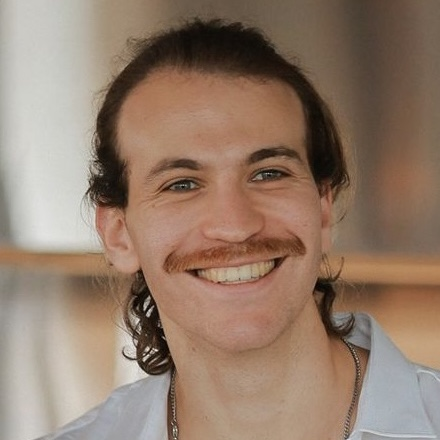

Ph.D. Candidate, Tel Aviv University
AI Research Scientist Intern, IBM Research
I am a Ph.D. candidate (direct track) in Electrical Engineering at Tel Aviv University, advised by Dan Raviv in the Geometric Deep Learning Lab. My research studies the emergence of structural low rank and spectral bias in deep learning, and how they shape generalization, forgetting, and optimization. I use these insights to develop principled methods for applications spanning classification, language and vision models, implicit neural representations (INRs) and graphics, forgetting and model merging, and post-training.
Alongside my Ph.D., I am an AI Research Scientist Intern in the Multimodal AI group at IBM Research, led by Eli Schwartz, where I work on post-training for vision-language models (VLMs). Previously, I received a B.Sc. in Applied Mathematics and completed my M.Sc. thesis work in Electrical Engineering, both at Tel Aviv University, and led the deep learning group at Dtect Vision.
Always happy to discuss low-rank structure and spectral bias in deep learning; feel free to reach out via email.
Joined IBM Research as an AI Research Scientist Intern in the Multimodal AI group, led by Eli Schwartz.
Catastrophic Forgetting is Low-Rank: A Function-Space Theory for Continual Adaptation was accepted to the ICML 2026 Workshop on Continual Adaptation at Scale (CATS).
SONAR: Spectral-Contrastive Audio Residuals for Generalizable Deepfake Detection was accepted to ICML 2026! Code, figures, and findings are on the project page.
Transitioned to the Ph.D. direct track at Tel Aviv University, continuing in the Geometric Deep Learning Lab.
Appointed Lead, Deep Learning at Dtect Vision, heading research and productization of detectors for AI-generated audio and images.
New preprint introduces SONAR, which detects AI-generated audio by isolating the high-frequency residuals that common detectors under-exploit.
Joined Dtect Vision to work on production deepfake detection, translating frequency-domain theory into deployable detectors.
Started an M.Sc. in Electrical Engineering at Tel Aviv University and joined the Geometric Deep Learning Lab.
Completed a B.Sc. in Applied Mathematics at Tel Aviv University.